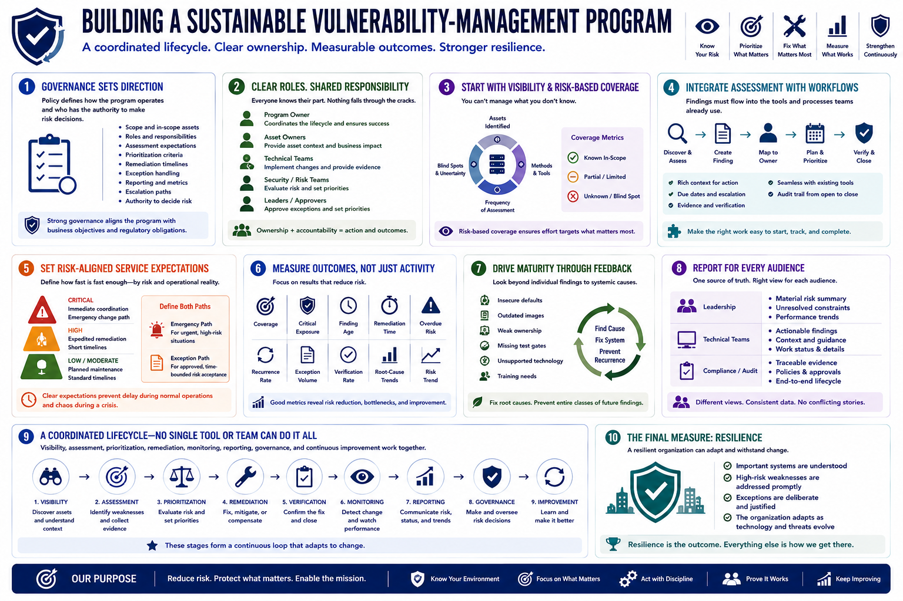

What Is Vulnerability Management?
Building a Vulnerability Management Program
Connecting to LMS... Progress: in progress
Version 1.0 | Date: 2026-06-18 | Educational overview of vulnerability management concepts.

Narration
A sustainable vulnerability-management program begins with governance. Policy defines scope, roles, assessment expectations, prioritization criteria, remediation timelines, exception handling, reporting, escalation, and the authority to make risk decisions.
Clear roles prevent findings from becoming nobody's problem. The program owner coordinates the lifecycle, asset owners supply context, technical teams implement changes, security teams evaluate risk, and accountable leaders approve exceptions and priorities.
Start with reliable asset visibility and risk-based coverage. The program should know which environments are assessed, how often, by which methods, and where blind spots remain. Coverage metrics should distinguish known scope from uncertainty.
Integrate assessment with operational workflows. Findings should enter systems that teams already use, carry enough context for action, map to accountable owners, and support due dates, escalation, evidence, verification, and closure.
Service-level expectations should reflect risk and operational reality. Critical exposures may require immediate coordination, while lower-risk work can follow planned maintenance. Emergency paths and exception paths should both be defined before a crisis.
Useful metrics measure outcomes, not just activity. Coverage, critical exposure, finding age, remediation time, overdue risk, recurrence, exception volume, verification rate, and root-cause trends can show whether the program is actually reducing risk.
Program maturity grows through feedback. Recurring weaknesses may reveal insecure defaults, outdated deployment images, weak ownership, missing test gates, unsupported technology, or training needs. Fixing systemic causes prevents entire classes of future findings.
Leadership should receive a concise view of material risk, unresolved constraints, and performance trends. Technical teams need actionable detail. Compliance personnel need traceable evidence. Good reporting serves each audience without creating conflicting versions of reality.
Successful programs combine visibility, assessment, prioritization, remediation, monitoring, reporting, governance, and continuous improvement. No scanner, dashboard, policy, or individual team can replace that coordinated lifecycle.
The final measure is resilience: important systems are understood, high-risk weaknesses are addressed promptly, exceptions are deliberate, and the organization can adapt as technology and threats continue to change.